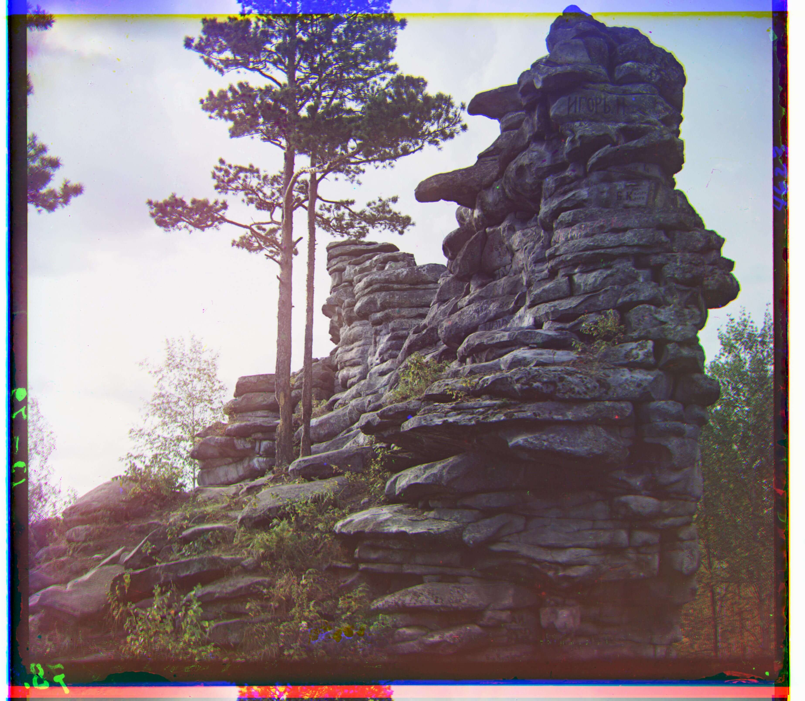

Images of the Russian Empire
CS 194-26 Project #1 · Owen Jow · September 2016
Sergei Mikhailovich Prokudin-Gorskii was, first of all, a man with a really long name. But more than that – born in 1863, he was a color photography enthusiast in a time when color photography hardly even existed! Specifically, we didn't have the technology to print images in color. But that didn't stop our middle-aged hero from traveling across the countryside, capturing the Russian Empire as a series of RGB glass plate negatives. Known as the
Prokudin-Gorskii collection, these negatives provided blue, green, and red color data for every recorded image. By stacking all three on top of each other, any individual photograph could (in theory) be reconstructed in color. Exciting!
That, then, is our aim for the project: to colorize the Prokudin-Gorskii collection by aligning/combining each photograph's RGB channels. (Why is alignment necessary? Because the RGB components were photographed separately, and thus wouldn't be positioned exactly the same relative to each other.) Our implementation utilizes displacement heuristics to automatically align and stack Prokudin-Gorskii color negatives.
Implementation Details
Color alignment via normalized cross-correlation, accelerated with a pyramid representation
We split the image into three (one for each color channel). Then we do our best to align each of the green and red images with the blue image. Finally, we stack the aligned images on top of each other and display (/save) the result. And that's it! Below is the pseudocode for the overall colorization process:
read in the image
convert the image to floating-point format
separate into b, g, and r images, each with 1/3 of total height
if using edge alignment:
create edge-filtered r, g, and b images
align edge-filtered r and g with edge-filtered b
align unfiltered r and g using returned best shift
else:
align r and g with b
create color image by stacking aligned r, g, and b images
output colorized image
But wait! The pseudocode abstracts away the inner workings of a very important function: alignment. What happens there? Again, we lay it out (the alignment function, that is) in very rough pseudocode:
input: im1 and im2
output: (aligned_im1, best_shift) tuple
---
cut the borders off of im1 and im2 (remove ~20% from top, left, bottom, and right edges)
displ := max of 3 and (15 - 3 ^ anticipated recursion depth)
recursive_shift := (0, 0)
if either dimension of im2 is > 400:
_, recursive_shift := result of alignment fn called with half-sized im1 and im2
displace im1 by 2 * recursive_shift
compute [-displ:displ, -displ:displ] grid of displacements to search over
for each (right, down) displacement in the above grid:
shifted_im1 := appropriately displaced version of im1
compute the normalized cross-correlation (ncc) of shifted_im1 with im2
if ncc is the highest ever seen:
save (right, down) & shifted_im1 as best_shift & aligned_im1
return aligned_im1, (best_shift combined with recursive_shift)
As an overview, we search over a
[-displ:displ, -displ:displ] grid for the
im1 displacement that yields the highest normalized cross-correlation (NCC) with
im2 (in our case
im2 would be the blue image, since we always align using blue as a reference).
The alignment with the highest NCC is the im1 alignment we return and use. Thus, the NCC is simply a metric used to evaluate the quality of any given alignment. Technically speaking, it ends up being the dot product between two normalized, flattened images.
We also use an
image pyramid (i.e. a multiscale coarse-to-fine search over displacements) in order to speed up alignment evaluation. This is the recursive part of the algorithm above. Namely, if the images are too big we downsize them by a factor of two in both dimensions and call the alignment function again on the reduced-resolution versions. Since the image is of the same content (just with 4x less pixels), shifting by a single pixel in the downsized image is like shifting by two pixels in the original image. In this way, we are able to recursively run a coarser (but broader) search than we were in the original image... and in a faster time, too. Using the multiscale pyramid scheme, the algorithm has been able to align all images in under ~20 seconds.
A few last-minute comments about the above implementation. First, the images are cropped – only the middle 60% of both dimensions is used. The reasons for this are twofold: (1) to improve alignment accuracy (as the borders interfere with the validity of the heuristic), and (2) to decrease processing time (since there are less pixels to deal with).
Second, note that the search space decreases as a function of the image resolution. We use the anticipated recursion depth (from wherever the call is in the recursion tree),
max(log_2(height / 400), log_2(width / 400)), as a measure of how large the image is... and, equivalently, how expensive its processing would be. As the number of future recursive calls decreases, the search space over displacements increases. This progression is part of the aforementioned coarse-to-fine search. At scaled-down versions of the image, more displacements (and far more area overall) are covered – since at low resolutions search is inexpensive. Meanwhile, as mentioned before, high-resolution images require a lot more time for metric computation... so we try not to evaluate an excessive number of alignments for those.
Edges as Features
A bells & whistles addition: alignment based on edges
The Emir of Bukhara was a tricky case. Since his color channels didn't have the same brightness values, NCC on its own struggled to identify a decent displacement for the R/G color negatives. In particular, the red image wasn't being aligned very well. As a consequence, we stopped using raw pixel values as features and ran our alignment algorithm on the images' edges instead. (To detect edges, we made use of the Canny edge-filtering function featured in the scikit-image library.) The result was a lot better!
Blue edges
|
Green edges
|
Red edges
|
Before | G: (24, 49), R: (59, 107)
|

After | G: (23, 49), R: (41, 106)
|
Example Images
Algorithm results for the given collection of images
* All of the images past this point have been aligned using RGB similarity.
** Displacements are formatted as (right shift, down shift) for each of the green and red images.

cathedral.jpg | G: (2, 5), R: (3, 12)
|
emir.tif | G: (24, 49), R: (59, 107)
|

icon.tif | G: (17, 40), R: (23, 89)
|
lady.tif | G: (9, 54), R: (12, 116)
|

melons.tif | G: (10, 81), R: (11, 170)
|

monastery.jpg | G: (2, -3), R: (2, 3)
|

nativity.jpg | G: (1, 3), R: (0, 8)
|
onion_church.tif | G: (27, 51), R: (37, 108)
|

three_generations.tif | G: (14, 52), R: (12, 111)
|

tobolsk.jpg | G: (3, 3), R: (3, 7)
|
train.tif | G: (6, 43), R: (32, 87)
|

village.tif | G: (12, 65), R: (22, 137)
|

workshop.tif | G: (-1, 53), R: (-12, 105)
|
Selected Images
Additional photographs from the Prokudin-Gorskii collection
00064a.tif | G: (0, 47), R: (-25, 106)
|
00201a.tif | G: (-31, 37), R: (7, 97)
|
00452a.tif | G: (8, 55), R: (20, 127)
|
00453a.tif | G: (11, -33), R: (20, 16)
|
00456a.tif | G: (8, 45), R: (12, 125)
|
00480a.tif | G: (21, 55), R: (29, 115)
|
00558a.tif | G: (23, 35), R: (36, 85)
|

00872a.tif | G: (-12, -28), R: (-23, -15)
|
01402a.tif | G: (62, 73), R: (106, 157)
|
01593a.tif | G: (16, 72), R: (9, 164)
|
01606a.tif | G: (14, 70), R: (12, 149)
|
01877a.tif | G: (48, 55), R: (87, 142)
|
01880a.tif | G: (22, 58), R: (38, 139)
|